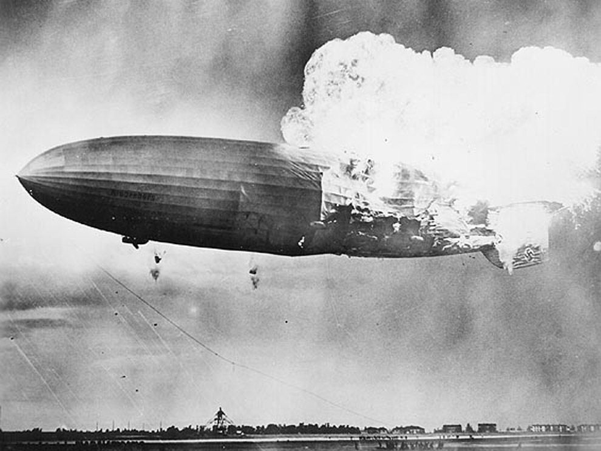

Failed Transportation Systems
-
We are going to tell about the transportations that are no longer used / failed to successful in the commercial market due a variety of factors and reasons. There can be various reasons which can lead to a particular mode of transport being cancelled. They can be :
Cost
Economic reasons
Low popularity of the mode of transport among the public.
Let us discuss some Transport and analyse why the were discontinued. -

The Concorde
The Concorde is a British-French turbojet-powered supersonic passenger airliner that was operated from 1976 until 2003. It had a maximum speed over twice the speed of sound at Mach 2.04 (1,354 mph or 2,180 km/h at cruise altitude), with seating for 92 to 128 passengers.
Unfortunately, it stopped operating in 1978 despite it being really fast and an effective mode of transportation.Concorde used roughly 25,629 litres per hour. The average length of a flight was 3 1/2 hours. So in total a Concorde flight with maximum 100 people used 89,708 litres of jet fuel. Let’s compare Concorde to its long time Transatlantic rival - the iconic Boeing 747. A non-Concorde flight with a minimum of 400 passengers consumed 59,500 litres of fuel. So Concorde flew far fewer people and consumed far more fuel. Lack of routes to fly.
Cost : a return ticket from London to New York would cost you $11000 , as one can see this is not a cheap affair. The cost wasn’t affordable and wasn't feasible for the general public. -

Airship
An Airship or dirigible balloon is an aerostat ( an aircraft that’s lighter than air ) that can navigate through air under it’s own power. Aerostats gain their lift from large gas bags filled with a lifting gas that is less dense than the surrounding air. Usually Helium is used as the lifting gas.
They are very slow modes of transportation. Helium has a very low lifting power, as a result it can carry only few people.
Accidents : Due to many high profile accidents, people thought it was unsafe to travel in airships, which adversely affected it’s popularity. One of the famous accidents is when the Hindenburg caught fire on 6th May 1937.
Cost factor : The Hindenburg 3.5 times longer than a 747-400, and could only lift 60% as much cargo by weight.
Its gas bags held 656,000 m^2 of hydrogen, which, if you were to fill with helium, would cost over 1.2 million dollars based on 2005 crude helium prices.
Not to mention the construction costs of both the airship and the giant hangar -

Hot Air Balloon
A hot air balloon is a type of aircraft. It is lifted by heating the air inside the balloon, usually with fire. Hot air weighs less than the same volume of cold air (it is less dense), which means that hot air will rise up or float when there is cold air around it, just like a bubble of air in a pot of water. The greater the difference between the hot and the cold, the greater the difference in density, and the stronger the balloon will pull up.
Speed - Basically a balloon goes at the speed of wind. Since that is far slower than your automobile and very nearly all other forms transit short of walking or running, it's not viewed as being practical.
Cost - It would cost a great deal to rent the balloon, pay the pilot, pay for the fuel used and also pay for the return of the pilot and the balloon in case the wind doesn't cooperate with them.
Weather - Balloons have safety limits in which they can fly that are far more circumspect than nearly all other aircraft and certainly much stricter than wheeled vehicles or boats. A balloon flight might have to delayed by days for weather that could be flown or driven through in minutes or hours.
Availability - There aren't many balloons out there. There are far fewer than other types of aircraft in total and there's an infinitesimal number when compared to other forms of transit. There simply aren't enough balloons to go around.